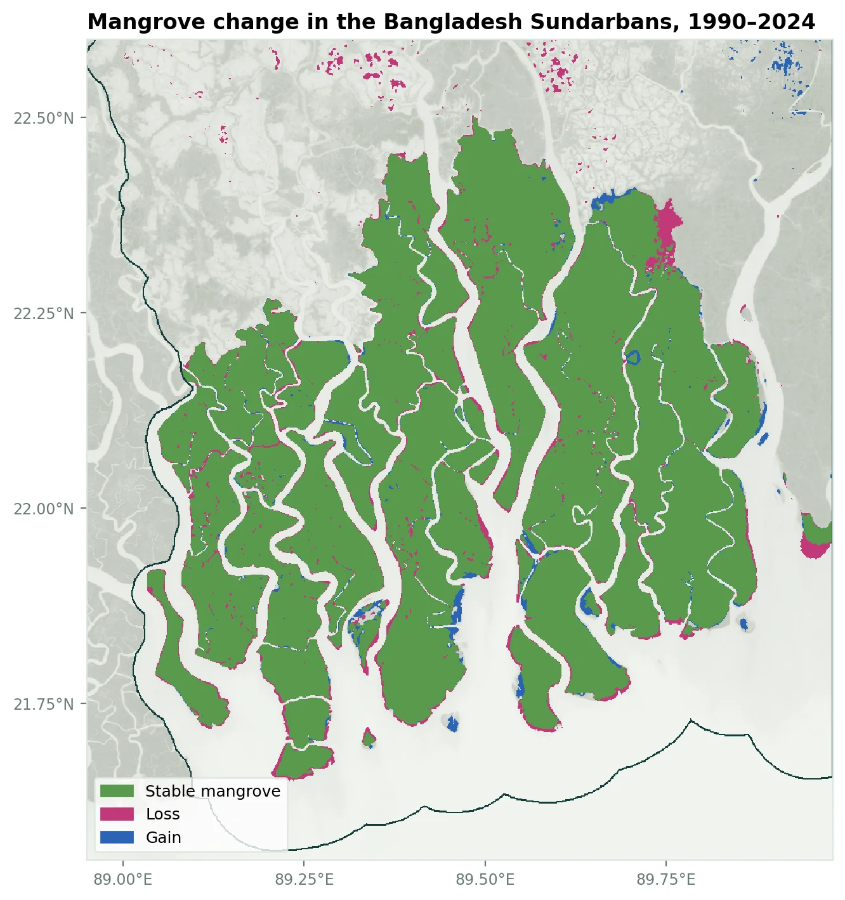
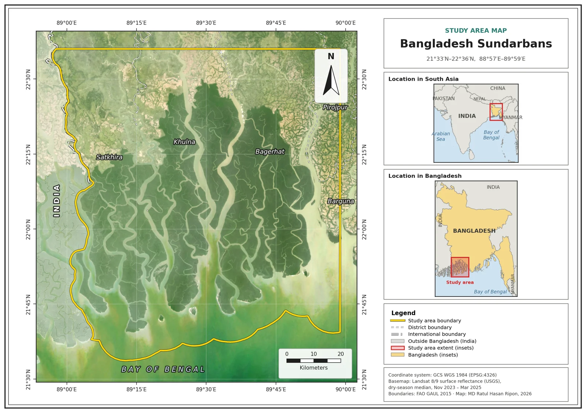
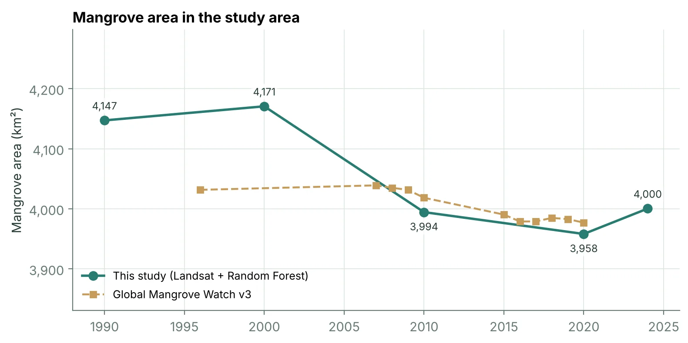
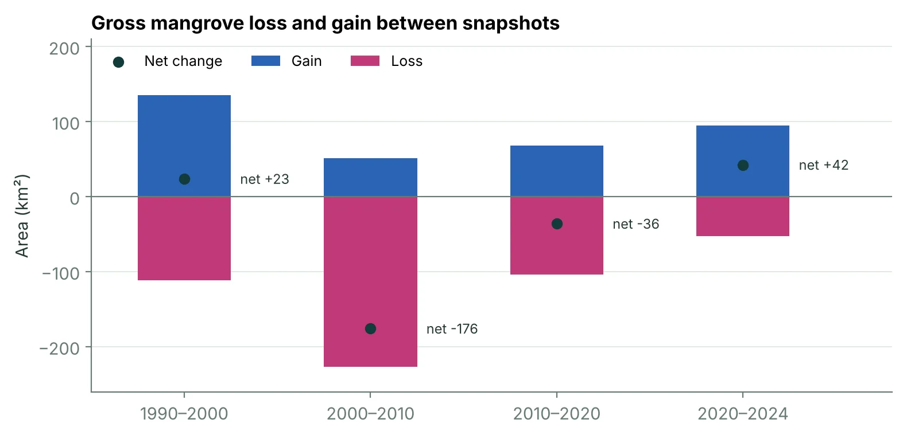
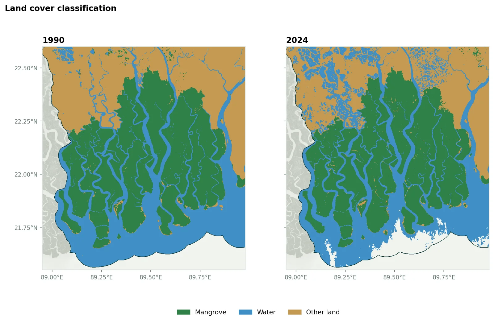

How has the Bangladesh Sundarbans changed since 1990?
I mapped the Bangladesh part of the world's largest mangrove forest from Landsat satellite images for five years between 1990 and 2024, to measure how much mangrove there is, where it has been lost or gained, and how reliable the mapping is.

Study area
The Sundarbans covers about 10,000 km² of the Ganges–Brahmaputra delta, shared between Bangladesh and India, with roughly 60% in Bangladesh. The Bangladesh part is a UNESCO World Heritage Site and a Ramsar wetland of international importance. I studied the Bangladesh side, in Satkhira, Khulna and Bagerhat districts, with a 10 km margin along the coast so that the seaward edge of the forest is included.

Key findings
- Mangrove covered about 4,000 km² of the study area in 2024, compared with 4,147 km² in 1990.
- That is a net change of -147 km² (-3.5%). But my maps differ from Global Mangrove Watch by up to 136 km² (in 2000), which is about as large as the change itself, so the size of the change is uncertain. Global Mangrove Watch shows -55 km² (-1.4%) between 1996 and 2020. Both datasets agree on the direction: a slight decline rather than large-scale loss.
- Behind the net figure, 271 km² that was mangrove in 1990 was not mangrove in 2024, and 124 km² went the other way. Some of this is real change (erosion and new land along rivers and the coast) and some is classification noise, so the gross figures are upper estimates.
- Compared with Global Mangrove Watch for the same area, my estimates differ by 2000*: +136 km² (+3.4%), 2010: -24 km² (-0.6%), 2020: -19 km² (-0.5%) (* compared with Global Mangrove Watch interpolated between its nearest years). They agree most closely in 2020 and least in 2000.
- The classifier matched held-out reference samples 98.0–99.6% of the time (kappa 0.97–0.99). Those samples come from areas that never changed, so real accuracy is lower, especially along forest edges and riverbanks.
Has the total area changed?
I compared my estimates with Global Mangrove Watch, an independent global dataset made with different satellites and methods, for exactly the same study area. Where the two agree, the mapping is more believable. Where they differ, the gap shows how uncertain any single map is.


Land cover maps

How reliable is the mapping?
Each year has its own classifier, tested on reference samples it did not see during training. Producer's accuracy is the share of real mangrove the map found; user's accuracy is the share of mapped mangrove that really is mangrove.
| Year | Images from | Images | Cloud-free cover | Overall accuracy | Kappa | Mangrove producer's / user's | Mangrove (km²) |
|---|---|---|---|---|---|---|---|
| 1990 | Nov 1989 – Mar 1991 | 44 | 100.0% | 99.6% | 0.99 | 99.7% / 99.4% | 4,147 |
| 2000 | Nov 1999 – Mar 2001 | 70 | 100.0% | 99.0% | 0.99 | 99.0% / 98.4% | 4,171 |
| 2010 | Nov 2009 – Mar 2011 | 108 | 100.0% | 98.0% | 0.97 | 98.6% / 95.6% | 3,994 |
| 2020 | Nov 2019 – Mar 2021 | 67 | 100.0% | 98.4% | 0.98 | 98.4% / 97.1% | 3,958 |
| 2024 | Nov 2023 – Mar 2025 | 135 | 100.0% | 98.2% | 0.97 | 97.9% / 96.9% | 4,000 |
Data and methods
- Imagery: Landsat 5, 7, 8 and 9 Collection 2 surface reflectance, dry season (November–March) only. Clouds and shadows removed with the quality band. Landsat 7 is used only before 2013, because its images have stripes after a 2003 scan-line fault and Landsat 8 is available from 2013.
- Composites: median of all clear observations in a window around each year, widened automatically if clouds left gaps.
- Features: six reflectance bands plus NDVI, NDWI, MNDWI and the Mangrove Vegetation Index.
- Reference samples: 1000 per class (mangrove, water, other land), drawn from areas that never changed in Global Mangrove Watch (1996–2020) and the JRC Global Surface Water dataset, away from class edges.
- Classifier: Random Forest with 100 trees, 70% of samples for training and 30% for testing, followed by a 3 × 3 majority filter.
- Change: pixel-by-pixel comparison of the mangrove class between snapshots, with true pixel areas.
- Processing: Google Earth Engine through its Python API. Accessed 2026-11-10.
Limitations
- The reference samples come from areas that never changed, so the accuracy figures are optimistic. There was no field data for each year.
- The Sundarbans is tidal. Some change along creeks and mudflats is just the tide on different days.
- Earlier years use Landsat 5 and 7, later years Landsat 8 and 9. Each year has its own classifier, but small sensor differences remain.
- The maps show extent, not health. "Top dying" of Sundri trees and rising salinity happen inside the forest without changing its outline.
- The border with India follows the FAO GAUL boundary, which is approximate along the rivers.
What I would do next
- Check the maps against high-resolution images in Google Earth Pro at random points, for an independent accuracy estimate.
- Separate erosion on the seaward edge from changes inside the forest.
- Track forest health inside the stable mangrove with an NDVI trend alongside salinity data.
Data credit and references
- Landsat Collection 2 Level-2 surface reflectance, courtesy of the U.S. Geological Survey.
- Bunting, P., Rosenqvist, A., Hilarides, L., et al. (2022). Global Mangrove Extent Change 1996–2020: Global Mangrove Watch Version 3.0. Remote Sensing, 14, 3657. Data licensed CC BY 4.0.
- Pekel, J.-F., Cottam, A., Gorelick, N., & Belward, A. S. (2016). High-resolution mapping of global surface water and its long-term changes. Nature, 540, 418–422.
- Baloloy, A. B., Blanco, A. C., Ana, R. R. C. S., & Nadaoka, K. (2020). Development and application of a new mangrove vegetation index (MVI) for rapid and accurate mangrove mapping. ISPRS Journal of Photogrammetry and Remote Sensing, 166, 95–117.
- Breiman, L. (2001). Random forests. Machine Learning, 45, 5–32.
- Gorelick, N., et al. (2017). Google Earth Engine: Planetary-scale geospatial analysis for everyone. Remote Sensing of Environment, 202, 18–27.
- Country boundaries: FAO Global Administrative Unit Layers (GAUL) 2015.